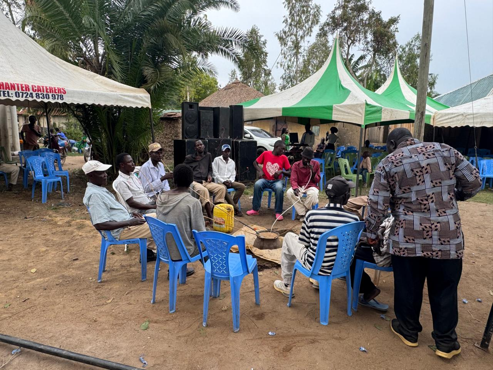
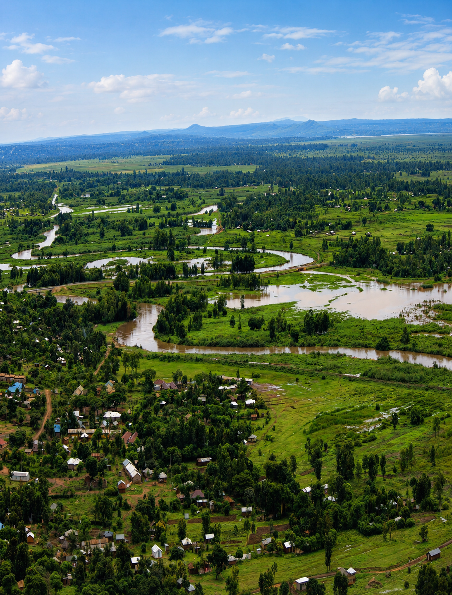

Senior Chief Mukudi: The Oath, the Prison, and the Liberation of Bunyala
The son of Namwonja swore the Mau Mau oath even in retirement, orchestrating the movement across Bunyala until his arrest at Kajiado Prison in 1954.
Read moreStories that preserve the memory of Chief Namwonja Mukudi and the values he stood for.
The son of Namwonja swore the Mau Mau oath even in retirement, orchestrating the movement across Bunyala until his arrest at Kajiado Prison in 1954.
Read more
Explore the enduring legacy of a pre-colonial monarch whose influence stretched across the Kavirondo Gulf, Lake Victoria, and the diaspora of his bloodline.
Read more
His leadership was rooted in service, discipline, and a steady commitment to uplifting the people around him.
Read more.jpeg)
Chief Namwonja Mukudi carried cultural pride into every decision, proving that heritage can guide progress.
Read more.jpeg)
His impact was never only personal; it was felt in families, gatherings, and the steady growth of the wider community.
Read more
Family values shaped the inner strength behind the public life and wider influence of the legacy.
Read more
The story survives through teaching, remembrance, and the quiet influence of lived values.
Read moreWe welcome contributions from the community. If you have a memory, a reflection, or a story about Chief Namwonja Mukudi, we would love to hear from you.